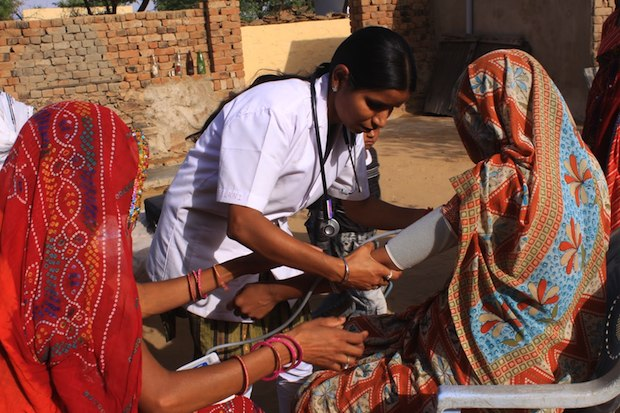

Improving Healthcare in Rural Areas
March 15, 2024
Mental health awareness campaigns in Bangladesh have gained momentum, contributing to the destigmatization of mental health issues across the country. These initiatives aim to address the prevalent stigma and improve access to mental health care.
Despite these efforts, challenges persist. Mental health services in Bangladesh are limited, with a shortage of qualified professionals and inadequate facilities, particularly in rural areas.